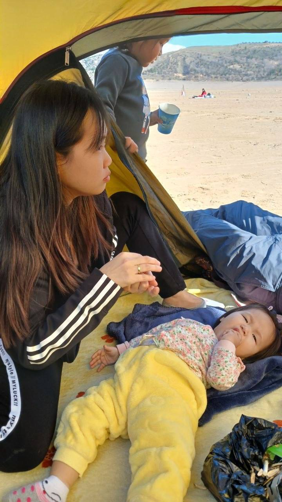
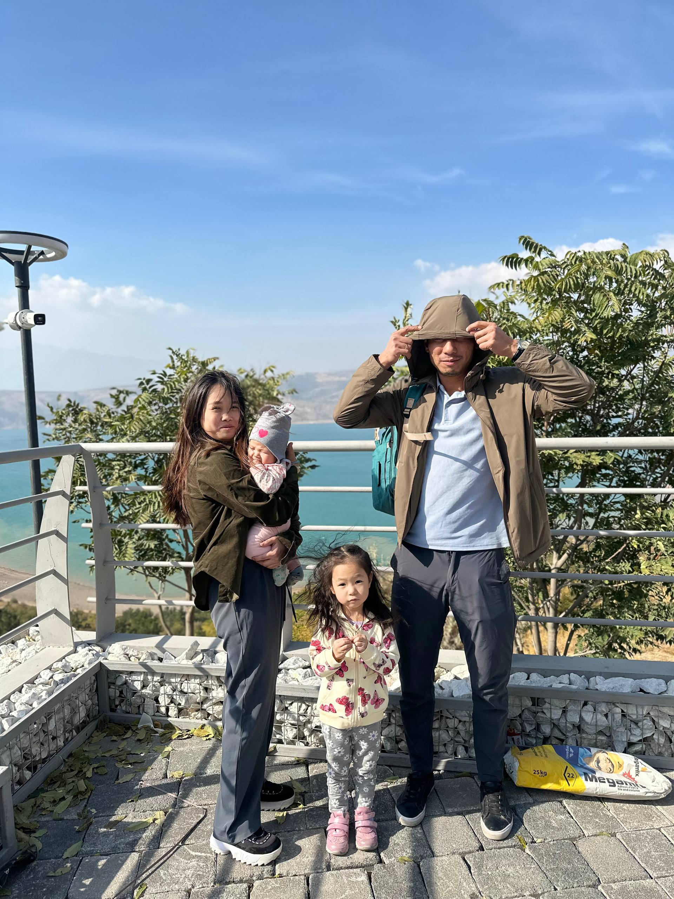

Марина — мама двух дочерей и человек, который всегда знает, что происходит вокруг. Пока остальные только пытаются разобраться в ситуации, у неё уже есть план, запасной план и примерное понимание того, кто во всём виноват.
При этом Марина остаётся одним из самых спокойных людей в компании. По крайней мере, внешне.

Марина — человек, который успевает заниматься семьёй, работой и при этом сохранять здравый смысл. Что само по себе заслуживает уважения, учитывая, что дома её каждый день ждёт Узбекский Маск со своими новыми идеями.
Именно от Марины мир впервые узнал подробности некоторых приключений Узбекского Маска. В частности, истории о дверях появились не без её участия.

За годы совместной жизни с Узбекским Маском Марина научилась сохранять спокойствие практически в любой ситуации. Некоторые считают это жизненным опытом, другие — суперспособностью.
Поэтому, если однажды будет учреждена награда за самое крепкое терпение, у Марины будут очень хорошие шансы на победу.